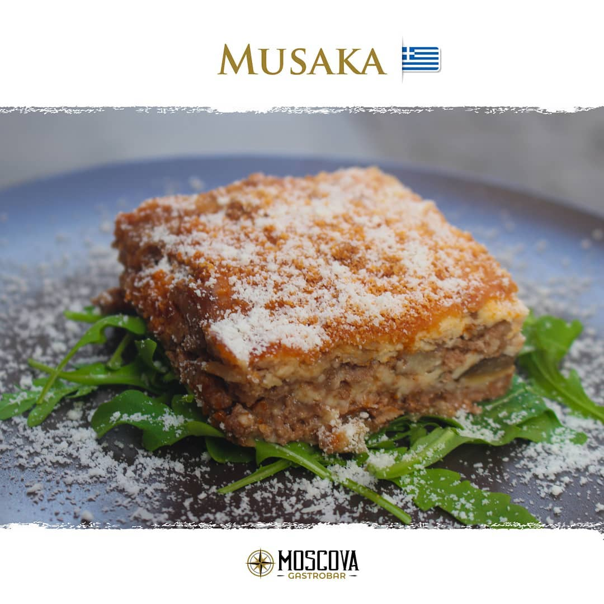

Musaka podľa @moscovagastrobar — Normy Jedál
Uno de los platos favoritos por ustedes es la famosa “lasagna”🍽 #griega 🇬🇷 sin pasta y con 🍆berenjena: #Moussaka o #Musaka , una receta deliciosa.
Ven a disfrutarla en #MoscovaGastroBar
☎️ Reservas al: 865 83 11 92
📍Calle Mayor 41, Casco Antiguo Santa Cruz (Barrio), #Alicante, 03002 “A escasos metros del Ayuntamiento”.
📩 gastrobarmoscova@gmail.com🇬🇷
#Alacant #RestauranteAlicante #Foodie #Alicantemola #GourmetAlicante